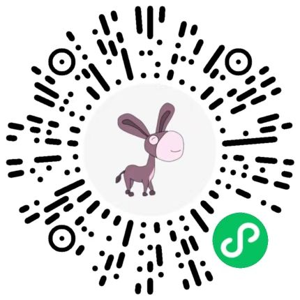

Xixi Wu 「吴茜茜」
Incoming Ph.D. student,
The Chinese University of Hong Kong
Email / GitHub / Google Scholar
Incoming Ph.D. student,
The Chinese University of Hong Kong
Email / GitHub / Google Scholar

Short Bio
This is Xixi, currently pursuing my M.S. degree at Fudan University under the supervison of Prof. Yun Xiong.
Previously, I received my B.S. in Computer Science from Fudan University in 2021.
My research interests lie in Deep Graph Learning and Data Mining. In particular, I am excited about the following topics:
- Graph Foundation Models: integrating LLMs and GNNs to realize a universal graph model, which can even exhibit zero-shot learning abilities.
- Graph Prompt Learning: enabling pre-trained graph models to adapt to diverse downstream tasks
- Other Data Mining Tasks: community detection, group representation learning, temporal interaction graph mining, etc.
Selected Publications
-
Graph Prompt Learning: A Comprehensive Survey and BeyondSurvey

Xiangguo Sun, Jiawen Zhang, Xixi Wu, Hong Cheng, Yun Xiong, and Jia Li
arXiv preprint, 2023
-
CLARE: A Semi-supervised Community Detection AlgorithmKDD'2022

Xixi Wu, Yun Xiong, Yao Zhang, Yizhu Jiao, Caihua Shan, Yiheng Sun, Yangyong Zhu, and Philip S. Yu
Proceedings of the 28th ACM SIGKDD Conference on Knowledge Discovery and Data Mining (KDD), 2022
-
ConsRec: Learning Consensus Behind Interactions for Group RecommendationWWW'2023

Xixi Wu, Yun Xiong, Yao Zhang, Yizhu Jiao, Jiawei Zhang, Yangyong Zhu, and Philip S. Yu
Proceedings of the ACM Web Conference (WWW), 2023
-
Dual Intents Graph Modeling for User-centric Group DiscoveryCIKM'2023

Xixi Wu, Yun Xiong, Yao Zhang, Yizhu Jiao, and Jiawei Zhang
Proceedings of the 32nd ACM International Conference on Information and Knowledge Management (CIKM), 2023
-
iLoRE: Dynamic Graph Representation with Instant Long-term Modeling and Re-occurrence PreservationCIKM'2023

Siwei Zhang, Yun Xiong, Yao Zhang, Xixi Wu, Xi Chen, Yiheng Sun, and Jiawei Zhang
Proceedings of the 32nd ACM International Conference on Information and Knowledge Management (CIKM), 2023


Experience
-

Microsoft
Software Engineer Intern, Outlook Mobile Team Jul. 2020 – Sep. 2020
Selected Awards
- National Scholarship for Graduate Student 2022&2023
- ACM Web Conference Student Travel Award 2023
- Second Class Scholarship for Outstanding Student, Fudan University 2018&2021
- Second Prize of China Undergraduate Mathematical Contest in Modeling, Shanghai (CUMCM) 2019
- First Prize in National Olympiad in Mathematics in Provinces, Jiangsu, China 2016
Misc
- I have a passion for sports üèä‚Äç‚ôÄÔ∏è üèãüèª. In my free time, I also enjoy cooking ü§£
- During my undergraduate studies, I discovered a love for mobile app development (all source codes can be found on my Github):

Lose Weight, a Fluter App
 Hulv, a Mini-Program

Chatroom, a Desktop App
- I enjoy exploring the unknown. I strive to move forward on this path of exploring and learning ✨